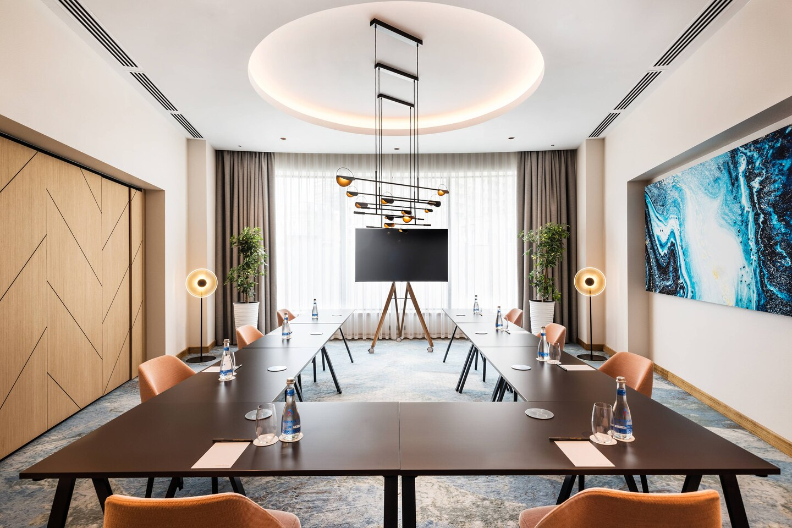
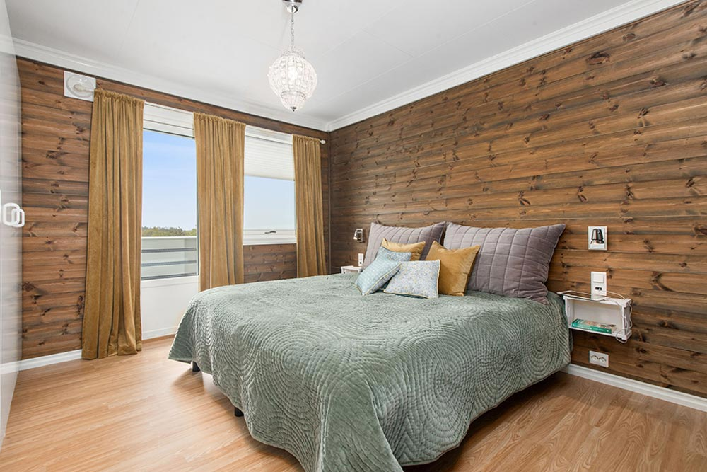

İşığın memarlığı
Məkanın ritmini
işıq müəyyən edir.
Fərdi hazırlanmış tekstil, dəqiq mühəndislik və səssiz hərəkət — bir bütöv interyer təcrübəsində.
01 / YANAŞMA
Biz pəncərəni örtmürük.
İşığın məkana necə daxil olacağını dizayn edirik.
Hər layihə işığın istiqaməti, məxfilik, akustika, parça davranışı və interyerin arxitekturası birlikdə düşünülərək hazırlanır.
↗
02 / İŞIQ LABORATORİYASI
Şəffaflıqdan
tam məxfiliyə.
Scroll etdikcə parça qatları bağlanır. Eyni məkan, fərqli işıq ssenarisi.
03 / KOLLEKSİYA
Forma, funksiya
və material.
Sadə seçim üçün dörd aydın istiqamət.
 01
01PƏRDƏ SİSTEMLƏRİ
Yumşaq forma. Dəqiq proporsiya.
↗
02JALÜZ SİSTEMLƏRİ
İşığa dəqiq nəzarət.
↗
03AĞILLI HƏRƏKƏT
Səssiz. Görünməz. Rahat.
↗ 04
04İNTERYER TEKSTİLİ
Məkanı tamamlayan toxumalar.
↗04 / SƏSSİZ MÜHƏNDİSLİK
Hərəkəti
eşitməyin.
Motor, rels və parça bir sistem kimi işləyir. Hər açılış eyni dərəcədə yumşaq, dəqiq və səssizdir.
Ağıllı sistemləri kəşf et ↗WHISPER-QUIET MOTION

05 / LAYİHƏLƏR
İnteryerdən
başlayan həllər.
Yaşayış, hospitality və korporativ məkanlar üçün ölçüdən quraşdırmaya qədər vahid yanaşma.
Layihələrə baxSARVAGELLI TEXTILE CONCEPT